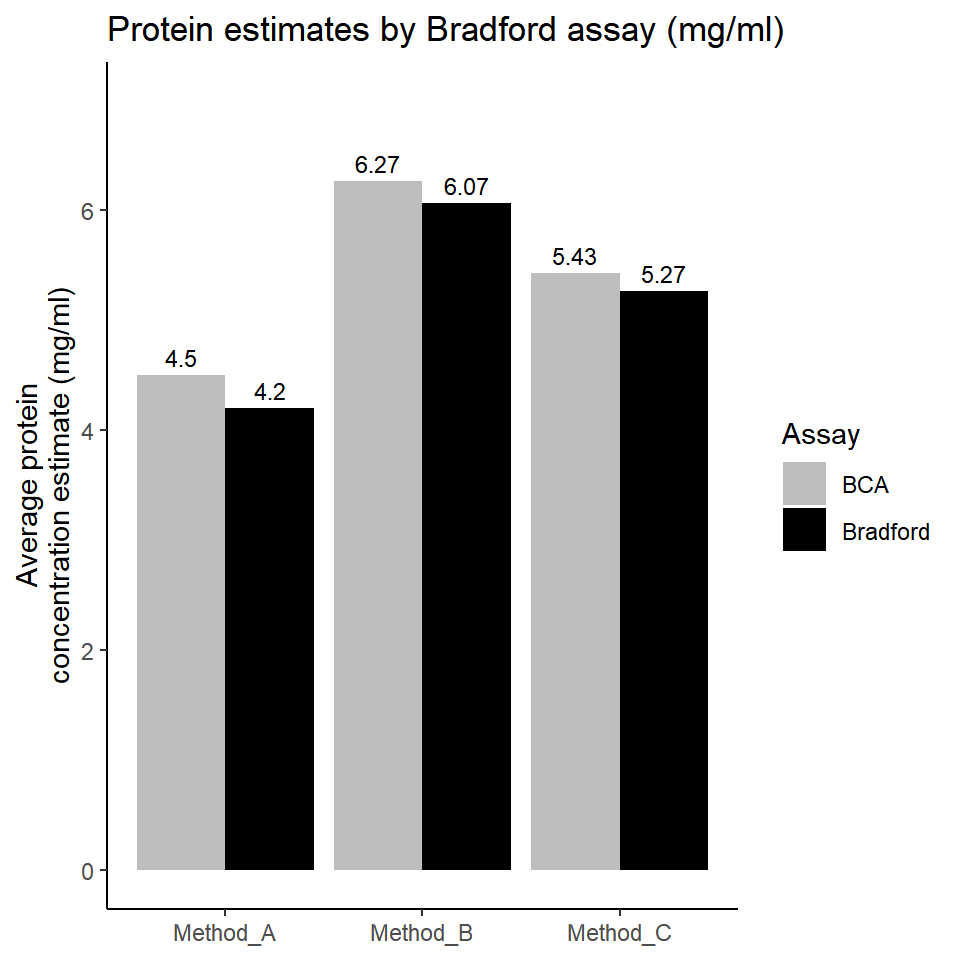
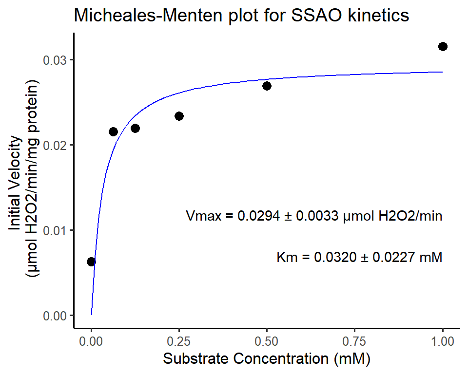
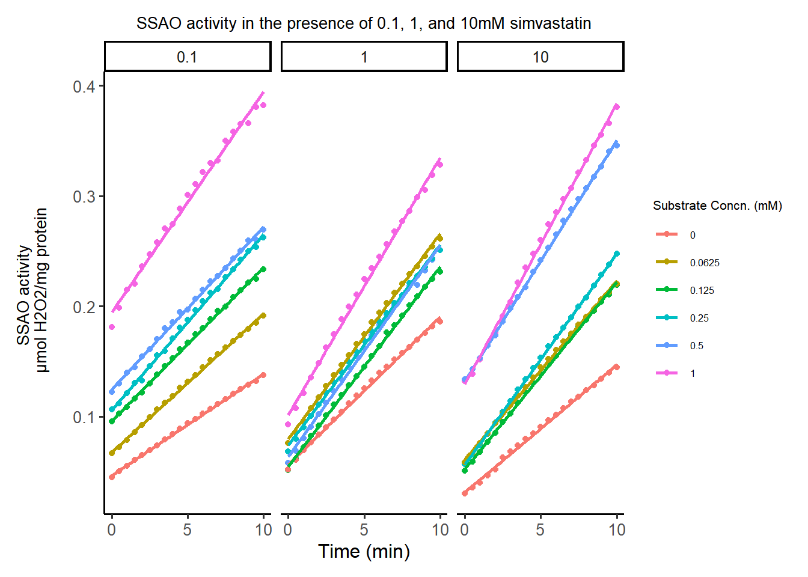
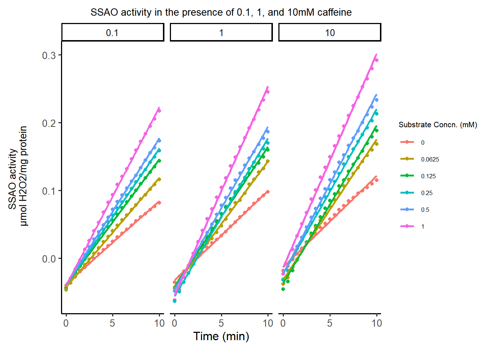

The extracts obtained from each method were quantified using Bradford and BCA assays. These samples were diluted 10-fold to fit the absorbances obtained into the standard curve. The protein concentrations of the dilutes samples were then calculated using the standard curve. These results were corrected with the dilution factor to calculate the estimated protein concentration of undiluted samples. The results are tabulated and presented as mean Table 5.2 and compared in Figure 5.1. Amplex® red monoamine oxidase assay was used to determine the SSAO activity in the samples from each method after treating the sample with the Amplex® red reaction mixture with 10mM benzylamine as substrate and incubating at 37 ℃ for 30 minutes before measuring the fluorescence. The results of SSAO activity from each sample is presented in Table 5.3 and Figure 5.2 .
5.1 Method A
The tissues collected for a period of 4 days were weighed and freeze dried using a freeze dryer to dehydrate the tissue. 11.1g of tissue were freeze dried resulting in a loss of 71.1% of weight(water) and 3.1g of dehydrated tissue was obtained. Defatting of the dehydrated tissue caused a further loss of 1g of fat weight, resulting in 2.1g of tissue. Bradford assay and BCA assay were performed to estimate the protein concentration in the extract obtained from this method A. Only one independent experiment was performed using Method A (refer to 4.2.1) due to unavailability of the freeze dryer during the project. The estimated protein concentration of the extract obtained from method A is 4.2 mg/ml (estimated by Bradford assay) and 4.5 mg/ml (estimated by the BCA assay). The SSAO activity was measured with 10mM Benzylamine as substrate and was found to be 2.02 µmol H2O2 /mg protein.
5.2 Method B
Three independent experiments were performed by method B Section 4.2.3.2 for extracting SSAO from rat BAT. Frozen tissues collected over 4 days were used for each experiment. Tissue weights are presented in Table 5.1 and the percentage of fat lost was calculated from the dried tissue weight after treatment with 100%EtOH. Bradford and BCA assays were performed to estimate the protein concentrations in each extract and the results are presented and compared as mean in Table 5.2 and Figure 5.1 . The average amount of estimated protein is 6.07 and 6.27 mg/ml by Bradford and BCA assays respectively. The average SSAO activity was measured with 10mM Benzylamine was found to be 1.64 µmol H2O2 /mg protein Table 5.3 .
Table 5.1: Weights of rat BAT used in method B for protein extraction.
5.3Method C
Three independent experiments were performed by Method C Section 4.2.3.3 . The tissues were weighed before cutting into tiny pieces for homogenisation. Since there was no ideal way to measure the amount of fat removed by centrifugation, percentage of fat lost was not calculated for extracts obtained from method C. The average estimated protein concentration for extracts obtained by method C is 5.27 and 5.43 mg/ml by Bradford and BCA assays respectively. The average SSAO activity from samples obtained by method C was 0.02 µmol H2O2 /mg protein.
Table 5.2: Estimated protein concentration (mg/ml) by Bradford and BCA assay for samples obtained by Method A (One independent experiment), and Method B and Method C (3 independent experiments)
Code
mean_data <- bradford_BCA |>group_by(Assay) |>summarise(across(starts_with("method"), mean, na.rm =TRUE)) |>pivot_longer(cols =starts_with("method"),names_to ="Method",values_to ="Mean")ggplot(mean_data, aes(x = Method, y = Mean, fill = Assay)) +geom_bar(stat ="identity", position =position_dodge(width =0.9))+scale_y_continuous(limits =c(0, 7))+labs(title ="Protein estimates by Bradford assay (mg/ml)", x =NULL, y ="Average protein\nconcentration estimate (mg/ml)" ) +theme_minimal() +scale_fill_manual(values =c("Bradford"="black", "BCA"="grey")) +theme(plot.title =element_text(size =14, hjust =0.5),axis.title.y =element_text(size =12, margin =margin(t =0, r =15, b =0, l =0)),axis.text.x =element_text(size =10),axis.text.y =element_text(size =10),legend.title =element_text(size =10),legend.text =element_text(size =9),legend.position ="right",plot.margin =margin(10, 10, 10, 10) ) +geom_text(aes(label =round(Mean, 2)),vjust =-0.5,position =position_dodge(width =0.9),size =3 )+theme_classic()

Figure 5.1: Comparision of average protein concentration estimate in extracts obtained from Method_A, Method_B, and Method_C by BCA and Bradford assays.
Table 5.3: SSAO activity corrected to protein concentration from respective BCA results for Method A (One independent experiment), and Method B and Method C (3 independent experiments
Figure 5.2: Comparison SSAO activity corrected to protein concentration from respective BCA results for Method A (One independent experiment), and Method B and Method C (3 independent experiments).
5.4 Enzyme Kinetics
The extract obtained from Experiment 1 of method B is used to measure the kinetic activity of SSAO by Amplex® red monoamine oxidase assay. The SSAO activity was measured as described in Section 4.2.5 . For measuring the continuous kinetic activity of SSAO, the instrument was setup in plate mode which measured the fluorescence every 30 seconds for 10 minutes. The fluorescence measurements resulting from the reaction mixture were used as blanks and all the values were corrected accordingly. The gain settings and focal length were maintained constant to obtain consistent readings.
Resorufin at different concentrations was used to establish a standard curve to determine the slope and offset using a linear regression curve. The fluorescence readings were exported into excel and formatted to ensure a consistent data format for processing. The mean of the replicate readings was converted into equivalent H2O2 concentrations using the resorufin standard curve equation. These values were plotted against time in minutes to calculate the change in H2O2 concentration over time using linear regression.
Individual curves were plotted for values obtained from each benzylamine concentration.
\[
{V0} = \frac{Vmax * [S]}{Km + [S]}
\tag{5.1}\]
Code
library(broom)library(ggpubr)# Importing the data from a csv filekinetic_data <-read_csv("E:/LearningR/rforlearn/GIT/academic_works/kinetic_data.csv")# Pivoting the data to fit the visualisation needskinetic_data_pivot <- kinetic_data |>pivot_longer(cols =!(starts_with("Time")),names_to =c("test_group", "inhibitor_concn", "substrate_concn"),names_sep ="_",values_to ="ssao_activity" ) |>mutate(inhibitor_concn =parse_number(inhibitor_concn),substrate_concn =parse_number(substrate_concn))# Isolating the ssao activity for control group for plotkinetic_data_pivot |>group_by(test_group) |>filter(test_group =="Control") |>mutate(substrate_concn =factor(substrate_concn)) |>ggplot(aes(x =`Time (min)`, y = ssao_activity, color = substrate_concn, group = substrate_concn))+geom_point() +geom_smooth(method ="lm",formula = y ~ x,se =FALSE, )+labs(title ="SSAO kinetics - Control",y ="SSAO activity \n µmol H2O2/mg protein", color ="Substrate Conc. (mM)" )+theme_classic2()
SSAO activity measured over 10 minutes using benzylamine as substrate
The slope of these curves represents the initial velocity of each enzyme reaction at different substrate concentrations and reported as V0 (µmol H2O2/min/mg protein).
Code
#|# Creating a separate df for the control group for deriving initial velocitykinetic_data_pivot_control <- kinetic_data_pivot |>filter(test_group =="Control")# lm modeling to generate slope for each substrate concentrationlm_results <- kinetic_data_pivot_control |>group_by(substrate_concn) |>do(model =lm(ssao_activity ~`Time (min)`, data = .)) |>mutate(intercept =coef(model)[[1]],slope =coef(model)[[2]],equation =sprintf("y = %.4fx + %.4f", slope, intercept))# SSAO activity - initial velocity printed into a separate dfssao_control_Vo <-select(lm_results, substrate_concn, slope)# renaming the columns to S and V for easier usessao_control_Vo <- ssao_control_Vo |>rename(c('V'= slope, 'S'= substrate_concn))table_ssao_control_iniV <- ssao_control_Vo |>rename(c('Initial Velocity'="V", 'Substrate concentration'="S"))kable(tibble(table_ssao_control_iniV), format ="html", align ="c")
Substrate concentration
Initial Velocity
0.0000
0.0062583
0.0625
0.0215376
0.1250
0.0219468
0.2500
0.0233723
0.5000
0.0268804
1.0000
0.0315220
Table 5.4: Initial Velocity for ssao activity for each substrate concentration calculated by linear regression.
The initial velocity for each substrate concentration was tabulated and analysed using non-linear regression Michaelis-Menten kinetic model (Equation 5.1) to generate the Michaelis-Menten curve Figure 5.3 and determine Km for benzylamine and Vmax values (A. 2005).
Code
# Kinetic modelling to produce mm plots# Define the Michaelis-Menten equationmm_equation <-function(S, Vm, Km) { (Vm * S) / (Km + S)}# non-linear fittingmm_fit <-nls(V~mm_equation(S, Vm, Km),data = ssao_control_Vo,start =list(Vm =max(ssao_control_Vo$V), Km =median(ssao_control_Vo$S)))# Extracting the calculated parameters from above modelparams <-summary(mm_fit)$parametersKm <- params["Km", "Estimate"]Vm <- params["Vm", "Estimate"]Vm_se <- params["Vm", "Std. Error"]Km_se <- params["Km", "Std. Error"]# Generating points for the fitted curveS_curve <-seq(0, max(ssao_control_Vo$S), length.out =100)V_curve <-predict(mm_fit, newdata =list(S = S_curve))# mm_plot generationggplot(ssao_control_Vo, aes(x = S, y = V)) +geom_point(size =3)+geom_line(data =data.frame(S = S_curve, V = V_curve), color ="blue")+labs(title ="Micheales-Menten plot for SSAO kinetics",x ="Substrate Concentration (mM)",y ="Initial Velocity \n (µmol H2O2/min/mg protein)")+theme_classic2()+annotate("text", x =max(ssao_control_Vo$S), y =min(ssao_control_Vo$V),label =sprintf("Vmax = %.4f ± %.4f µmol H2O2/min\nKm = %.4f ± %.4f mM", Vm, Vm_se, Km, Km_se),hjust =1, vjust =0)

Figure 5.3: Micheales Menten plot for SSAO enzyme kinetics using benzylamine as substrate
From the nonlinear Michaelis Menten kinetic model, the Km and Vmax values were determined to be 0.03193mM and 0.02941 µmol H2O2/min, respectively.
5.5Enzyme Inhibition
A key objective of this project is to measure the influence of caffeine and simvastatin on SSAO activity. 10mM caffeine stock solution was prepared by dissolving 19.4mg of caffeine in 10ml of dH2O. Further dilutions of 1 and 0.1 mM were prepared from the 10Mm stock solution and were used to in the kinetic experiments. Similarly, 100mM simvastatin stock was prepared by directly adding 4.78ml of DMSO to the vial containing 200mg of simvastatin powder. 10, 1, and 0.1mM dilutions of simvastatin were prepared from the 100mM stock solution.
To study the effect of these inhibitors, 10µL of each inhibitor at different concentrations were added to wells containing 60µL of SSAO extract prepared by Method B (Experiment 1) in triplicate. The plates were incubated at 37℃ prior to adding the reaction mixtures containing different concentrations of the substrate.
The enzyme activity was initiated by adding the reaction mixtures the containing substrate and the fluorescence measurements were started as quickly as possible. The fluorescence values of control samples without inhibitors, and samples containing inhibitors were measured every 30 seconds for 10 minutes. This data was exported to excel and was formatted for further analysis. The fluorescence readings were converted to equivalent H2O2 concentrations using the resorufin standard curve equation. These values were plotted against time in minutes to obtain the initial velocity. The rate of hydrogen peroxide formation is provided in the appendix1 for all the kinetic experiments performed without and with different concentrations of the inhibitors. The initial velocity of each group of substrate concentrations with and without inhibitors were transferred to GraphPad to plot a nonlinear regression curve using the competitive inhibition kinetic model. This analysis was performed to calculate the Ki, Km, and Vmax of the inhibition reaction. The nonlinear regression model for competitive inhibition uses the following equation (A. 2005):
\[
Km obs = Km*{(1+\frac{[I]}{Ki})}
\tag{5.2}\]
\[
Y = \frac{Vmax*X}{Kmobs + X}
\]
Two-way ANOVA and Ad-Hoc Tukey’s comparison was performed to compare the difference in kinetic velocity between control and samples treated with different concentrations of the inhibitor. A significant difference in the initial velocities between different concentrations of the inhibitor and the control is represented with a p-value less than 0.05.
5.5.1 SSAO inhibition by Simvastatin
From the competitive inhibition model Equation 5.2 , the Ki for simvastatin was calculated to be 2.145 mM and the Km and Vmax for benzylamine on SSAO were 0.01893 mM and 0.02385 µM H2O2/min respectively ( Figure 5.5 , Table 5.6 ). The initial velocities for each simvastatin-treated SSAO sample were determined by performing linear regression on the curve of H₂O₂ formation over time, as illustrated in Figure 5.4 and Table 5.5 .
Code
kinetic_data_pivot |>group_by(test_group) |>filter(test_group =="SIM") |>mutate(substrate_concn =factor(substrate_concn)) |>ggplot(aes(x =`Time (min)`, y = ssao_activity, color = substrate_concn, group = substrate_concn))+geom_point() +geom_smooth(method = lm, se =FALSE)+scale_x_continuous(breaks =c(0,5,10))+labs(title ="SSAO activity in the presence of 0.1, 1, and 10mM simvastatin",y ="SSAO activity \n µmol H2O2/mg protein",color ="Substrate Concn. (mM)")+facet_wrap(~ inhibitor_concn)+theme_classic2()+theme(legend.position ="right")+theme(plot.title =element_text(size =10, hjust =0.5),axis.title.y =element_text(size =10, margin =margin(t =0, r =15, b =0, l =0)),axis.text.x =element_text(size =10),axis.text.y =element_text(size =10),legend.title =element_text(size =8),legend.text =element_text(size =6),plot.margin =margin(10, 10,10, 10) )+guides(colour =guide_legend(ncol =1, position ="right"))

Figure 5.4: SSAO activity measured over 10 minutes with benzylamine as a substrate (1, 0.5, 0.25, 0.125, 0.0625mM) and in the presence of simvastatin (SIM) at 0.1, 1, 10mM concentration. SSAO activity is presented as µM H2O2/mg protein. A – SSAO activity in presence of 0.1mM SIM, B – SSAO activity in the presence of 1mM SIM, C – SSAO activity in the presence of 10mM SIM.
Table 5.6: Non linear fit parameters for SSAO inhibition by simvastatin
5.5.2 SSAO inhibition by Caffeine
Like simvastatin, caffeine also follows the competitive inhibition model ( Equation 5.2 ) and the Ki for caffeine was calculated from one independent experiment ( Figure 5.7 ). The Ki value for caffeine calculated from competitive inhibition model is 6.768mM and the Km and Vmax for benzylamine on SSAO were 0.02903mM and 0.02850 µM H2O2/min, respectively ( Figure 5.7 and Table 5.8 ).
Code
kinetic_data_pivot |>group_by(test_group) |>filter(test_group =="CAF") |>mutate(substrate_concn =factor(substrate_concn)) |>ggplot(aes(x =`Time (min)`, y = ssao_activity, color = substrate_concn, group = substrate_concn))+geom_point() +labs(title ="SSAO activity in the presence of 0.1, 1, and 10mM caffeine",y ="SSAO activity \n µmol H2O2/mg protein",color ="Substrate Concn. (mM)")+geom_smooth(method = lm, se =FALSE)+facet_wrap(~ inhibitor_concn)+scale_x_continuous(breaks =c(0,5,10))+theme_classic2()+theme(legend.position ="right")+theme(plot.title =element_text(size =10, hjust =0.5),axis.title.y =element_text(size =10, margin =margin(t =0, r =15, b =0, l =0)),axis.text.x =element_text(size =10),axis.text.y =element_text(size =10),legend.title =element_text(size =8),legend.text =element_text(size =6),plot.margin =margin(8, 8, 8, 8) )+guides(colour =guide_legend(ncol =1))

Figure 5.6: SSAO activity measured over 10 minutes with benzylamine as a substrate (1, 0.5, 0.25, 0.125, 0.0625mM) and in the presence of caffeine (CAF) at 0.1, 1, 10mM concentration. SSAO activity is presented as µM H2O2/mg protein. A – SSAO activity in presence of 0.1mM CAF, B – SSAO activity in the presence of 1mM CAF, C – SSAO activity in the presence of 10mM CAF.
Table 5.8: Non linear fit parameters for SSAO inhibition by caffeine
A., Copeland R. 2005. “Evaluation of Enzyme Inhibitors in Drug Discovery. A Guide for Medicinal Chemists and Pharmacologists.”Methods of Biochemical Analysis 46: 1–265.